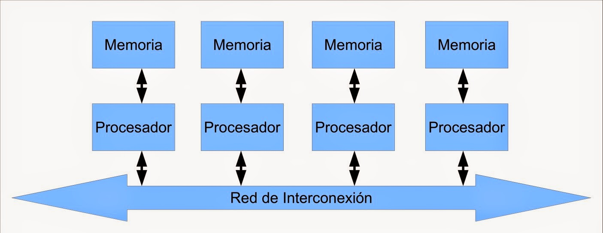

Cuando se desea incrementar el desempeño más aya de lo que permite la técnica de segmentación del cauce (limite teórico de una instrucción por ciclo de reloj), se requiere utilizar más de un procesador para la ejecución del programa de aplicación.
Las CPU de multiprocesamiento se clasifican de la siguiente manera (Clasificación de Flynn):
SISO – (Single Instruction, Single Operand) computadoras Monoprocesador
SIMO – (Single Instruction, Multiple Operand) procesadores vectoriales, Exenciones MMX
MISO – (Multiple Instruction, Single Operand) No implementado
MIMO – (Multiple Instruction, Multiple Operand) sistemas SMP, Clusters, GPUs.
Procesadores vectoriales – Son computadoras pensadas para aplicar un mismo algoritmo numérico a una serie de datos matriciales, en especial en la simulación de sistemas físicos complejos, tales como simuladores para predecir el clima, explosiones atómicas, reacciones químicas complejas, etc.
La mayoría de los procesadores modernos incluye algunas instrucciones de tipo vectorial, tales como las extensiones al conjunto de instrucciones tales como MMX y SSE. Estas instrucciones les permiten procesar flujos multimedia más eficientemente.
Los Procesadores Digitales de Señales (DSP), son procesadores especializados en el procesamiento de señales tales como audio, vídeo, radar, sonar, radio, etc. Cuentan con instrucciones tipo vectorial que los hace muy aptos para dicha aplicación. Suelen utilizarse en conjunto con un microcontrolador en dispositivos como reproductores de audio, reproductores de dvd y Blueray, teléfonos celulares, sistemas de entretenimiento, sistemas de adquisición de datos, instrumentos médicos, controles industriales, etc.
En los sistemas SMP (Simetric Multiprocesesors), varios procesadores comparten la misma memoria principal y periféricos de I/O, Normalmente conectados por un bus común. Se conocen como simétricos, ya que ningún procesador toma el papel de maestro y los demás de esclavos, sino que todos tienen derechos similares en cuanto al acceso a la memoria y periféricos y ambos son administrados por el sistema operativo.
Pueden formarse con varios núcleos en un solo circuito integrado o con varios circuitos integrados en una misma tarjeta madre. La primera opción ha sido popularizada al hacerse más económicos los procesadores multinucleo de los principales fabricantes y con su uso en sistemas de gama media y baja, e inclusive en teléfonos celulares y tabletas.
Los Clústers son conjuntos de computadoras independientes conectadas en una red de área local o por un bis de interconexión y que trabajan cooperativamente para resolver un problema. Es clave en su funcionamiento contar con un sistema operativo y programas de aplicación capaces de distribuir el trabajo entre las computadoras de la red.

Si quieres regresar al temario de la unidad presiona aqui
Si quieres regresar a la página principal presiona aqui